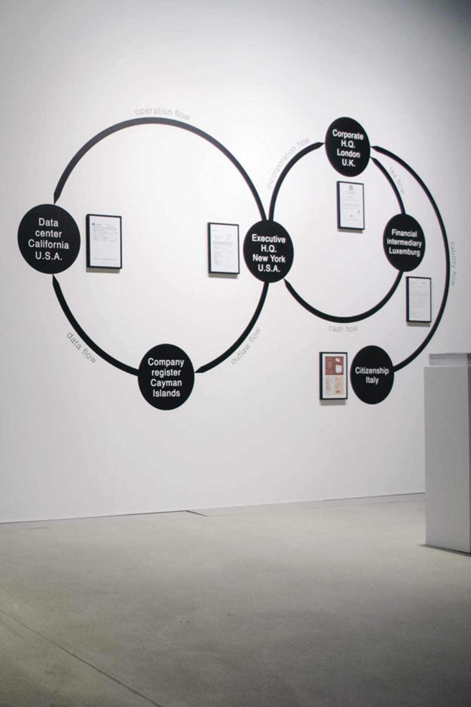

Freunde von Freunden
Cyber crime, corporate surveillance, fake news—thirty years into its existence the Internet is failing us. Italian artist Paolo Cirio points to Orwellian technology patents as the reason why.
When in early 2018 news broke that British political consulting firm Cambridge Analytica had harvested the personal data of 87 million Facebook users to influence the 2016 U.S. presidential election, even Internet watch dogs were caught off guard. “I’ve always believed the web is for everyone,” wrote none other than its inventor, English computer scientist Sir Tim Berners-Lee, “but for all the good we’ve achieved, the web has evolved into an engine of inequity and division.” Instead of the information utopia he envisioned thirty years ago, we got troll armies on Twitter, fake news on our Facebook feeds, and democracies on the brink. Cambridge Analytica shut down a few months later, but not a week goes by where data breaches, corporate spyware, and Internet toxicity aren’t in the news.
None of this is a surprise to Paolo Cirio. For more than a decade, the New York-based, Italian artist and hacktivist has called attention to invasive information technology, pervasive power structures, and ‘bad actors’ within the system. His works made street art out of NSA chiefs’ personal Facebook photos (Overexposed), set free 60,000 pay-walled articles (Daily Paywall), and took on the predatory online mugshot industry (Obscurity). In his most recent project, Cirio suggests that much of the Internet dysfunction is not a bug but a feature: launched in the aftermath of the Cambridge Analytica scandal, Sociality is a searchable database of technology patents that sheds light on the ethics—or lack thereof—of more than 20,000 algorithms, interfaces, devices, and online platform-Registered between 1998 and 2018, these filings reveal how, incrementally, our social sphere was taken over by Big Tech. During a Berlin visit, Cirio talked about Silicon Valley’s unscrupulous business of engineered manipulation—and how we can regain control.
They reveal how the Internet was turned into a machine for manipulation. The patents gathered were all filed during the last 20 years, mainly in California, and they lay out a framework for anything.”
I’ve always been interested in the hidden layers of control built into our information technology. One of my first projects, the experimental fiction The Big Plot, explored how social media affects human relationships and power structures. It tells the story of Russian intelligence using social networking sites to influence American politics. That was in 2009. A decade later, my dystopian vision is reality. In many ways, the fallout of the 2016 U.S. presidential election confirmed our worst fears about technology. We always knew “not to believe everything you read on the Internet”, but only then did we begin to realize how much it can distort the truth. But to what extent is technology to blame? What about the engineers who conceived it, the companies that stand to profit from it? At around that time, I began looking into public repositories of technology patents and was shocked at the sheer volume of explicitly manipulative filings.
There’s no shortage of overtly Orwellian patents such as “System and Method for Identifying People with Socially Unacceptable Behavior,” “Monitoring User Status by Comparing Public and Private Activities,” and “Web Search Based on Browsing History and Emotional State.” Others are a little more subtle: “Training Image-Recognition Systems Based on Search Queries on Online Social Networks,” for example, seems fairly harmless—until you find out it’s a patent owned by Facebook. Ultimately, it’s not about any one particular patent, but a whole lot of them working in conjunction whenever you use your phone.
“These patents reveal how the Internet was turned into a machine for manipulation. They also reflect the toxic mindset of Silicon Valley technologists who think that human sociality can be reduced to data.”
When I realized the wealth of visual material I could appropriate. Attached to most tech patents are diagrams, flow charts, and interface wireframes that, when embedded in opaque forms and jargon, don’t say much to you and me. Extracted and blown up, however, they begin to reveal their manipulative intent. Google’s patent search engine indexes more than 80 million patents filed around the world, but there’s a download limit of 800. Once I figured out how to bypass it, I got to work.
It was overwhelming, to say the least. I have some experience with sorting through vast data sets, but patents are a different matter. Every record includes a text, an image, and extensive correlated data, making automated organization really difficult. I wrote a software script that organized the patents based on keywords such as ‘social media’, ‘user tracking’, and ‘messaging’ as well as patent classes, assignees, and year of filing. Another script deployed the obtained data into a legible design template that establishes intent. And yet, the process was nothing short of laborious: I had to fine-tune categorization manually by going through the patents one by one. I personally examined at least 4,000 of them, giving me terrible headaches.
They reveal how the Internet was turned into a machine for manipulation. The patents gathered were all filed during the last 20 years, mainly in California, and they lay out a framework for anythingfrom social discrimination and deceptive marketing to corporate surveillance and behavior modification. They also reflect the toxic mindset of Silicon Valley technologists and ‘cyber libertarians’ who think that human sociality can be quantified and reduced to data. If anything, this project shows how technological progress becomes malignant when human conscience is removed from the equation. We need ethicists in patent offices, engineering schools, and tech companies to protect us from inventions that do more harm than good.
The database is an attempt to make potentially harmful patents visible and democratize the evaluation process; everyone is welcome to flag patents they find objectionable—or to submit new ones for the public to examine. The “ban” option allows you to alert regulators, researchers, and legal experts to a patent’s existence and its troublesome qualities via an automated email.
Regulation. It’s the only way to effectively protect the public from harmful technologies; technologies that are understood by less and less people the more powerful they become. But toxic products are hard to ban from a market controlled by monopolies—just look at the political influence of the banking, automobile, and fossil fuel industry. Google, for example, spent $21.2 million on lobbying efforts in 2018 alone—a new record. That’s why we need oversight, an informed public, and a regulatory apparatus that is nimble and uncorrupted. It’s no coincidence that European countries tend to have tighter rules than, for example, China or the United States.
Galleries and museums aren’t necessarily the best places to reach the people who can affect change. In the case of Sociality, I strategized the work with the top U.S. universities in mind. In a number of unauthorized interventions, I posted some of the more controversial patents throughout the campuses of Harvard, MIT, Columbia, Berkeley, and Stanford—the very places where many of its originators studied and where our technological future is being engineered.
Indeed. The book is a great medium to get the patents into the hands of general audiences at bookshops, libraries, and schools without having to point to the project’s website. I really like how the innocuous exercise of coloring helps make the issue of unethical patenting more accessible—it’s a provocation, but a cathartic one. I got the idea after looking at patented diagrams and schematics for months on end. I became obsessed with their spartan, often comical clipart aesthetics. Outlines of happy user faces, network flowcharts, and emoji-laden interfaces—you just want to color them in.
It will be a Frankenstein of social manipulation that draws on some of the most aggressive patents I found. Stringing some of these disruptive algorithms, interfaces, and devices together into one will likely provide a pretty accurate depiction of the actual Frankenstein of social manipulation we are already subjected to. And yes, I do plan to patent it. I started looking into the details of patent filing—my Frankenstein would be published even if not approved.
(W)orld Currency is an equation for a trading algorithm presented as a flowchart—a financial instrument, if you will. It describes a global reserve currency—(W)—that levels the daily gains and losses of widely traded currencies. Whereas conventional trading algorithms are engineered to maximize profits through high-frequency speculation, (W)orld Currency generates stability and equality instead. It’s funny: when I created the piece in 2014, cryptocurrencies weren’t really a thing yet. Now they are the poster child of boom and bust. It’s what happens when you leave what is an emerging, largely unregulated financial market to technologists and speculators.
Exactly! I’m interested in the systems that govern our society; systems that are often invisible, dynamic, and hard to represent. With flowcharts and algorithmic models I can illustrate the operational logic and information flows within these systems and counter them with models of my own. To me, they’ve become the most relevant artistic medium for reflecting on the complexities of the digital age.